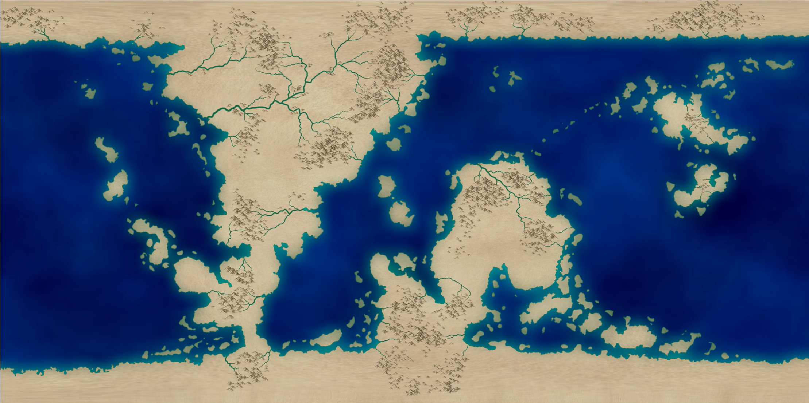

"Eureka" is a terrestrial planet that's slightly larger than Earth (1.279), and has a slightly higher amount of water. At first, it was just a rogue planet that was cold and wondering around space, however, Eureka has been pulled into a solar system by the 2 stars.
An F class star that's the biggest in the system.
An M class star and the smallest one in the system.
Eureka settled into orbit at 1.357 AU which is in the habitable zone for this system. One year on this planet is 470 Earth days, the surface temperature is around 11°C, and it has 30 tectonic plates, 5 of which are continental and 25 that are oceanic. About 85% of its surface is water. Additionally, it has one large moon that is the same blue as sodalite (royal blue), orbits Eureka every 36 earth days, and is tidally locked.The system that Eureka is in has 3 additional planets that were formed there:
A small, icy terrestrial planet that's the closest one to Eureka. At 3.202 AU
Class 2 giant, is important since it catches minor celestial objects within its gravitational pull to keep Eureka safe, average temperature is -72.118°C, it also has 217 moons. At 7.205 AU
Icy gas dwarf, the farthest one, and has 13 moons.
Composition of Eureka:
Atmosphere composition:
Map of Eureka
